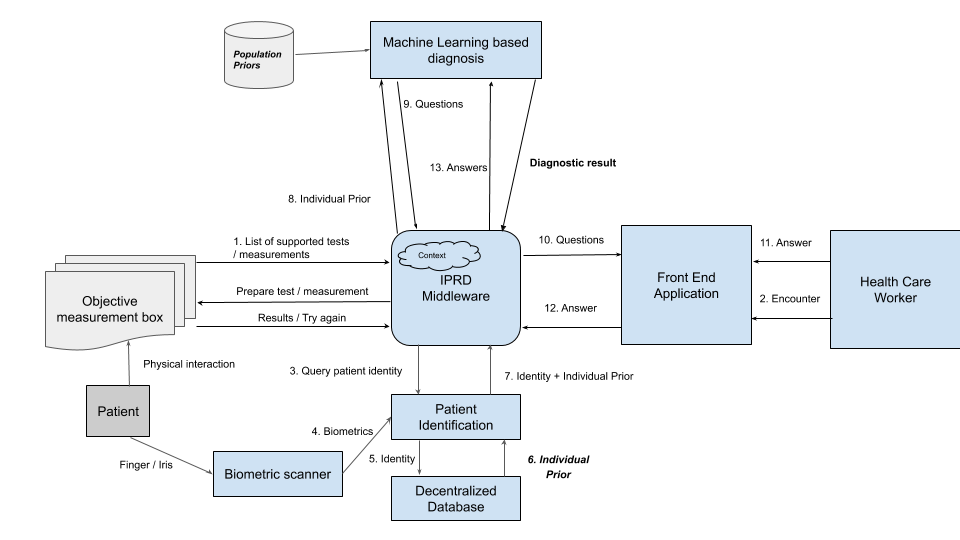
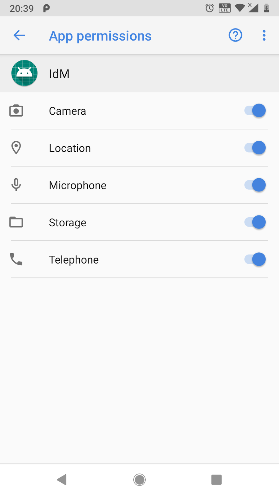
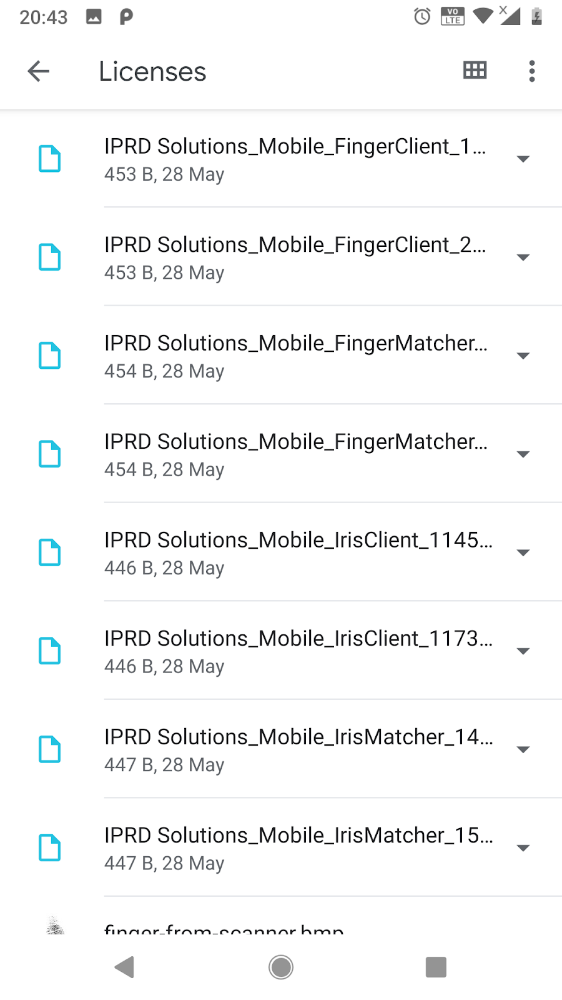

Overview of the Machine Guided Diagnostics Platform
Machine Guided Diagnostics holds the potential make high-quality public healthcare more accessible: expanding and augmenting the capabilities an experienced physician brings to the field. Its ability to triage patients, provide preliminary diagnosis, and help less skilled HCWs best support patients relies on its ability to input standardized data from a wide range of sources.
We have built a sample Machine Guided diagnosis (MGD) app that integrates with an Identity Management service as well as with other 3rd party apps and devices.
APIs and Data Standards make Machine Guided Diagnostics a core part of a SOAP ecosystem. APIs and Data Standards mean the right data, and tools to collect that data can be plugged into a Machine Guided Diagnosis platform in a scaleable, modular manner. Our goal is to make SOAP available - not as an expensive custom-developed eolithic system, but as a set of portable, reusable tools.
SOAP and how it relates to Gates strategy
Subjective Measurement
Objective Measurement
Assessment
Standard Procedures
API and data standards
FHIR and its Applicability to Global Public Health
HL7 FHIR (Fast Healthcare Interoperability Resources) is a rapidly emerging healthcare interoperability standard. There is considerable and growing industry enthusiasm for the interoperability approach exemplified by FHIR. Though promising in many respects, FHIR is still a nascent standard. Its immediate applicability depends critically on the use cases under consideration and the relative maturity of applicable FHIR components.
Read Full White Paper
Architecture view
System Context

Component Definitions
Integration Mechanisms
Intent based integration for Smart phones
Web services-based integration
Pros and Cons
Component Catalogue
Subjective Measurement Systems
Standard interface definitions
FHIR Resource types
Patient
Observation
ServiceRequest
Location
Encounter
Condition
Bundle
Practitioner
List
Sample FHIR resources
Objective Measurement Systems
Standard interface definitions
FHIR Resource types
Identity Management System
Introduction
This section talks about the Identity Management service app and the various API’s that can be used by apps to exercise the following functionality:
Check if a user (Health care worker/patient) is present in the system based on inputs like name, id number,biometric data. If not present, enroll the user. Get a photo and a consent check done by the user when they login to act as proof that they were physically present for the transaction. Get the patient’s signature and a proof of service to record the transaction between the HCW and the patient.
Right now, we support the following biometric devices: Watson mini and Credence ID biometric device.
Identity may be installed as an APK. Apps that need the above functionality need to first install Identity manager apk and then use an intent based approach (implicit intent) to exercise the above mentioned functionality.
API’s being used
| Method |
Input |
Output |
Description |
| Connect |
NA |
Context
API package version |
Creates a connection to Identity Service. It returns a context and the version of API. The version can be used by the application to check compatibility. This API must be called first while integrating an app with IdM. |
| AddPerson |
ContextPerson Type(HCW/Patient) |
Success/Failure/Need more information
GUID |
This method is called while trying to initially login a HCW or a patient. At the beginning itself, it asks for the user consent. If the person says yes, it asks him/her for name, age, id (government ID for HCW and similar ID for patient) and biometric data. We use an algorithm to calculate whether there is a user present or not based on the various inputs provided and the weightage attached to each input parameter. Note: Right now, the Identity apk has screens where these inputs can be entered by the user. Therefore the inputs - name,country code,mobile number,DOB, Skill, GUID may be left blank and won't be considered at this point. Similarly, in the output, we only receive status as success or failure. If more information is needed, that is handled in the IdM apk itself. We have retained these values in the request for future extensibility. |
| HandlePOS |
Context |
Success/Failure |
This gets the patient signature and displays a Proof of service screen for reference. This may be called after the patient has logged in and gone through the entire process of diagnosis |
Sample code
For all the API’s we need to pass an input JSON via an intent. Make sure you call “org.iprd.identity.IdmService”
Intent sendIntent = new Intent();
sendIntent.setAction("org.iprd.identity.IdmService");
sendIntent.putExtra("IdentityRequest",identityJSON);
sendIntent.setType("text/json");
The above code snippet creates an intent request (sendIntent variable) and further looks for the Identity service while calling the intent. In addition, it sends an Identity request to the Identity service app and passes the input/output using json.
Here is the syntax of the input and output JSON’s for each of the API’s:
1. Connect
Input:
{ "resourceType":"IdentityRequest", "reqID":"100", "reqTxt":"ConnectToIdentity", "Inputs": { } }
Output:
{ "resourceType":"IdentityRequest", "reqTxt":"ConnectToIdentity", "Outputs":{ "currCtx":"xyz", "currAPI":"2" } }
Note: The context value from the output is required in subsequent API calls.
2. AddPerson
Input:
{ "resourceType":"IdentityRequest", "reqID":"101", "reqTxt":"AddPerson", "Inputs": { "currCtx":"", "personType":"", } }
currCtx is the context value obtained from the Connect call. This is important - without the right value here, you may get a failure.
personType: This indicates the type of the user being added - HCW or Patient.
Output:
{ "resourceType":"IdentityRequest", "reqTxt":"AddPerson", "Outputs": { "addDone":"", "guid":"", "name":"", "dob":"" } }
Here, we need to ensure that the "addDone" in Outputs is true otherwise the login process was withdrawn either voluntarily or due to some issue.
The "guid" in Outputs is the GUID of the user added or updated. This may be used by the calling app if required.
Name and dob refer to the name and date of birth (approximate computation) of the user.
3. HandlePOS
Input:
{ "resourceType":"IdentityRequest", "reqID":"101", "reqTxt":"HandlePOS", "Inputs": { "currCtx":"" } }
Output:
{ "resourceType":"IdentityRequest", "reqTxt":"HandlePOS", "Outputs": { "posDone":"", } }
Here, we need to check the posDone for “true” or “false”. True indicates the POS was done successfully.
Note: In calling apps, please make sure that the intent call gives a "RESULT_OK" response code. Anything other than that indicates an issue.
Some sample code:
if (resultCode == RESULT_OK) { //check the output JSON for specific fields you want. } else if (resultCode == RESULT_CANCELED) { //error }
Please review the IdMTest app as well: https://bitbucket.org/IPRD/idmtest/src/master/
This has sample code where we call each of the above 3 API’s and parse their outputs. Please use that as a reference when you implement your app and call Identity service.
Guidelines for using IdM
Basic setup:
- Please make sure you install both IdM and the app which would call IdM. IdM runs as a separate app, but does not have its own launching UI and will not be visible as an app in the device. (It will however be called by the calling app)
- Once done, the IdM app will prompt the user to give permissions to access Location, file storage, Camera and other services. Please make sure that you select Yes for all of them. This is required for the app to work.
- In general, do check if all the permissions are set. This could be done by opening up the app details in Settings. See the below image for an example.

Licenses
- Please make sure you buy the Neurotec licenses required for the app
- Before starting the apps, we need to make sure the Neurotec licenses for biometric detection are installed in the phone
- Go to folder( path “/mnt/sdcard/” or “Internal Storage”) in Android device.
- Create folder by name “Neurotechnology” in above path
- Create a subfolder in above folder as “Licenses”.
- In Neurotechnology folder we need to copy “Irises.ndf” and “Fingers.ndf” files. In License folder we need to copy *.lic files.
- Please see the images below.

Running the app
Please make sure internet is ON while starting the app as we need an internet connection to validate the license installed.
Other features
- Ability to delete users (HCW/Patient or both).
- Ability to replicate data from the local sqlite db to a remote CouchDB instance.
Preferences
There is a Preferences tab in the consent screen that helps us configure settings. That could be used for:
- Switching between Credence ID device or the Watson mini device for biometric data.
- Configuring a remote IP address to replicate the DB. (Make sure a DB is setup at that remote location for use).
- Deleting all existing HCW and/or patient entries.
When you update any of the preference settings, make sure you hit the Back button from the consent screen and then start IdM again.
Biometric devices Integrated
Right now, we support the following biometric devices:
- Watson Mini fingerprint scanner.
- Credence ID iris and fingerprint scanner.
Both require the appropriate licenses to be installed on the device on which we are running the Identity apk. By default, the biometric device is set to Watson mini in the IdM app. However, there is a Preference tab on the right hand top corner of the initial consent screen, where we could change this to Credence ID.
Approach for using new Biometric devices
Biometric Matching algorithms integrated
Healthcube device integration
Health cube is a 3rd party device that helps us capture vital health information and blood tests for an individual like pulse,blood pressure,temperature and even do blood tests. It's a device that can do most tests normally done in a diagnostic lab.
It also comes with an app that can be used to get the readings from the device.
We have integrated a sample machine guided diagnosis app with this device. Right now, we only support the following readings from the device: blood pressure,pulse,SPO2. In addition, height, weight and temperature may be entered manually.
From our app, we call the Healthcube app via an intent call and when the intent call returns, we get the values entered in the app (either manually or via the device) Please see the JSON formats used in the intent call.
Input JSON format:
PATIENT_DETAILS : {"identifier":[{"system":"iprd","use":"usual","value":"patientid123"}],"resourceType":"Patient","address":[{"country":"india","type":"physical","use":"home"}],"birthDate":"2004-06-24","gender":"male","name":[{"given":["john doe"]}],"telecom":[{"rank":1,"system":"phone","use":"mobile","value":"9999887776"}]}
TEST_DETAILS : ["PULSE_OXIMETER","WEIGHT","BLOOD_PRESSURE","CHOLESTEROL","CHIKUNGUNYA","SYPHILIS"]
PARTNER_LOGIN_ID : +911111133333 PARTNER_LOGIN_SECRET : aXFZmNxI0YNo6Llyax1qqQ==
Output JSON format:
{"entry":[{"resource":{"identifier":[{"system":"Ezdx","use":"usual","value":"08188c64-fcda-468e-a48d-fee546d51c02"}],"resourceType":"Observation","code":{"coding":[{"code":"8310-5","display":"Body temperature","system":"http://loinc.org"}]},"subject":{"identifier":[{"system":"iprd","use":"usual","value":"patientid123"}]},"valueQuantity":{"code":"°F","system":"http://unitsofmeasure.org","unit":"°F","value":99.0}}},{"resource":{"identifier":[{"system":"Ezdx","use":"usual","value":"2dd95a76-2171-44ac-8f94-f014d8ae97d5"}],"resourceType":"Observation","code":{"coding":[{"code":"29463-7","display":"Body Weight","system":"http://loinc.org"}]},"subject":{"identifier":[{"system":"iprd","use":"usual","value":"patientid123"}]},"valueQuantity":{"code":"Kgs","system":"http://unitsofmeasure.org","unit":"Kgs","value":88.0}}},{"resource":{"identifier":[{"system":"Ezdx","use":"usual","value":"776a4fb4-a14d-486c-bdfa-54545b2f9060"}],"resourceType":"Observation","code":{"coding":[{"code":"8302-2","display":"Body height","system":"http://loinc.org"}]},"subject":{"identifier":[{"system":"iprd","use":"usual","value":"patientid123"}]},"valueQuantity":{"code":"cms","system":"http://unitsofmeasure.org","unit":"cms","value":177.0}}}],"resourceType":"Bundle","type":"collection"}
Videovitals integration
Videovitals is an app that can be used to get the heart rate of an individual from a live face capture. The MGD app integrates with this app via an intent call and receives the heart rate value (as computed by the app) in response.
Here are the JSON structures used -
Input JSON:
{ "entry": [{ "fullUrl": "http://iprdgroup.com/FHIR/Resources", "resource": { "resourceType": "ServiceRequest", "id": "example_request_HR", "status": "active", "intent": "original-order", "code": { "coding": [{ "system": "http://loinc.org", "code": "8867-4", "display": "Heart rate" }], "text": "Heart rate" }, "subject": { "reference": "Patient/patient_example" } } }], "resourceType": "Bundle", "type": "collection" }
Output JSON:
{ "entry": [{ "fullUrl": "http:\/\/iprdgroup.com\/FHIR\/Resources\/Observation2", "resource": { "basedOn": [], "code": { "coding": [{ "code": "8867-4", "display": "Heart rate", "system": "http:\/\/loinc.org" }] }, "id": "Observation\/obs1", "identifier": [{ "system": "http:\/\/www.jumper.com", "type": { "coding": [{ "code": "8867-4", "display": "Heart rate", "system": "http:\/\/loinc.org" }] }, "use": "usual", "value": "5ff75a42-6820-4e14-b7ae-934ceda8d3d6" }], "resourceType": "Observation", "status": "preliminary", "valueQuantity": { "code": "beats\/minute", "system": "http:\/\/unitsofmeasure.org", "unit": "beats\/minute", "value": 76 }, "effectiveDateTime": "2019-09-17T16:42:32.482+05:30", "subject": { "reference": "Patient\/patient_example" } } }], "resourceType": "Bundle", "type": "collection" }
Medsinc app integration
Medsinc is a medical diagnosis app by a company named thinkMD. Using a custom algorithm,it takes in patient vital information, demographic information and various assessments. Based on this, it provides severity for various medical conditions as well as a treatment plan.
Our Machine guided diagnosis app (MGD) integrates with the Medsinc app via a custom Chrome tab. The MGD app provides the Medsinc app with any vital information already captured which in turn gets pre-populated in the medsinc app. Once the assessments are done, it returns back to the MGD app.
Here are the JSON formats used:
Input JSON:
Encounter with patient @example
", "status": "additional" }, "class": { "system": "http://hl7.org/fhir/v3/ActCode", "code": "HH", "display": "home health" } } }, { "resource": { "active": true, "id": "HCW_790e59ce-7bdc-4c04-a930-324e0ca3512e", "identifier": [{ "system": "example", "type": { "coding": [] }, "use": null, "value": null }], "name": [{ "family": "Careful", "given": [], "mapA": { "given": ["Uk"], "prefix": ["Mr"] } }], "qualification": {}, "resourceType": "Practitioner" } }], "resourceType": "Bundle", "type": "collection" }
Output JSON:
Encounter with patient @example
", "status": "additional" }, "class": { "system": "http://hl7.org/fhir/v3/ActCode", "code": "HH", "display": "home health" }, "statusHistory": [{ "status": "arrived", "period": { "start": "2019-09-10T12:55:17.504Z", "end": "2019-09-10T12:55:17.504Z" } }] } }, { "resource": { "resourceType": "Condition", "id": "respiratory_distress", "text": { "status": "generated", "div": " respiratory_distress Condition
" }, "severity": { "coding": [{ "system": "http://snomed.info/sct", "code": "24484000", "display": "severe" }] }, "clinicalStatus": { "coding": [{ "system": "http://terminology.hl7.org/CodeSystem/condition-clinical", "code": "active" }] }, "verificationStatus": { "coding": [{ "system": "http://terminology.hl7.org/CodeSystem/condition-ver-status", "code": "unconfirmed" }] }, "code": { "coding": [{ "system": "http://snomed.info/sct", "code": "50043002", "display": "respiratory_distress" }] }, "subject": { "reference": "id1560451639623", "display": "child" }, "encounter": { "reference": "id1560452012016", "display": " 1 first interaction with Medsinc" }, "asserter": { "reference": "id1560454981713" }, "onsetDateTime": "2019-09-10T12:55:17.505Z", "recordedDate": "2019-09-10T12:55:17.505Z" } }, { "resource": { "resourceType": "Condition", "id": "dehydration", "text": { "status": "generated", "div": " dehydration Condition
" }, "severity": { "coding": [{ "system": "http://snomed.info/sct", "code": "6736007", "display": "moderate" }] }, "clinicalStatus": { "coding": [{ "system": "http://terminology.hl7.org/CodeSystem/condition-clinical", "code": "active" }] }, "verificationStatus": { "coding": [{ "system": "http://terminology.hl7.org/CodeSystem/condition-ver-status", "code": "unconfirmed" }] }, "code": { "coding": [{ "system": "http://snomed.info/sct", "code": "34095006", "display": "dehydration" }] }, "subject": { "reference": "id1560451639623", "display": "child" }, "encounter": { "reference": "id1560452012016", "display": " 1 first interaction with Medsinc" }, "asserter": { "reference": "id1560454981713" }, "onsetDateTime": "2019-09-10T12:55:17.522Z", "recordedDate": "2019-09-10T12:55:17.522Z" } }, { "resource": { "resourceType": "Condition", "id": "sepsis", "text": { "status": "generated", "div": " sepsis Condition
" }, "severity": { "coding": [{ "system": "http://snomed.info/sct", "code": "none", "display": "none" }] }, "clinicalStatus": { "coding": [{ "system": "http://terminology.hl7.org/CodeSystem/condition-clinical", "code": "active" }] }, "verificationStatus": { "coding": [{ "system": "http://terminology.hl7.org/CodeSystem/condition-ver-status", "code": "unconfirmed" }] }, "code": { "coding": [{ "system": "http://snomed.info/sct", "code": "91302008", "display": "sepsis" }] }, "subject": { "reference": "id1560451639623", "display": "child" }, "encounter": { "reference": "id1560452012016", "display": " 1 first interaction with Medsinc" }, "asserter": { "reference": "id1560454981713" }, "onsetDateTime": "2019-09-10T12:55:17.522Z", "recordedDate": "2019-09-10T12:55:17.522Z" } }, { "resource": { "resourceType": "Condition", "id": "malnutrition", "text": { "status": "generated", "div": " malnutrition Condition
" }, "severity": { "coding": [{ "system": "http://snomed.info/sct", "code": "24484000", "display": "severe" }] }, "clinicalStatus": { "coding": [{ "system": "http://terminology.hl7.org/CodeSystem/condition-clinical", "code": "active" }] }, "verificationStatus": { "coding": [{ "system": "http://terminology.hl7.org/CodeSystem/condition-ver-status", "code": "unconfirmed" }] }, "code": { "coding": [{ "system": "http://snomed.info/sct", "code": "2492009", "display": "malnutrition" }] }, "subject": { "reference": "id1560451639623", "display": "child" }, "encounter": { "reference": "id1560452012016", "display": " 1 first interaction with Medsinc" }, "asserter": { "reference": "id1560454981713" }, "onsetDateTime": "2019-09-10T12:55:17.523Z", "recordedDate": "2019-09-10T12:55:17.523Z" } }, { "resource": { "resourceType": "Condition", "id": "anemia", "text": { "status": "generated", "div": " anemia Condition
" }, "severity": { "coding": [{ "system": "http://snomed.info/sct", "code": "6736007", "display": "moderate" }] }, "clinicalStatus": { "coding": [{ "system": "http://terminology.hl7.org/CodeSystem/condition-clinical", "code": "active" }] }, "verificationStatus": { "coding": [{ "system": "http://terminology.hl7.org/CodeSystem/condition-ver-status", "code": "unconfirmed" }] }, "code": { "coding": [{ "system": "http://snomed.info/sct", "code": "271737000", "display": "anemia" }] }, "subject": { "reference": "id1560451639623", "display": "child" }, "encounter": { "reference": "id1560452012016", "display": " 1 first interaction with Medsinc" }, "asserter": { "reference": "id1560454981713" }, "onsetDateTime": "2019-09-10T12:55:17.523Z", "recordedDate": "2019-09-10T12:55:17.523Z" } }, { "resource": { "resourceType": "Condition", "id": "measles", "text": { "status": "generated", "div": " measles Condition
" }, "severity": { "coding": [{ "system": "http://snomed.info/sct", "code": "none", "display": "none" }] }, "clinicalStatus": { "coding": [{ "system": "http://terminology.hl7.org/CodeSystem/condition-clinical", "code": "active" }] }, "verificationStatus": { "coding": [{ "system": "http://terminology.hl7.org/CodeSystem/condition-ver-status", "code": "unconfirmed" }] }, "code": { "coding": [{ "system": "http://snomed.info/sct", "code": "14189004", "display": "measles" }] }, "subject": { "reference": "id1560451639623", "display": "child" }, "encounter": { "reference": "id1560452012016", "display": " 1 first interaction with Medsinc" }, "asserter": { "reference": "id1560454981713" }, "onsetDateTime": "2019-09-10T12:55:17.524Z", "recordedDate": "2019-09-10T12:55:17.524Z" } }, { "resource": { "resourceType": "Condition", "id": "malaria", "text": { "status": "generated", "div": " malaria Condition
" }, "severity": { "coding": [{ "system": "http://snomed.info/sct", "code": "none", "display": "none" }] }, "clinicalStatus": { "coding": [{ "system": "http://terminology.hl7.org/CodeSystem/condition-clinical", "code": "active" }] }, "verificationStatus": { "coding": [{ "system": "http://terminology.hl7.org/CodeSystem/condition-ver-status", "code": "unconfirmed" }] }, "code": { "coding": [{ "system": "http://snomed.info/sct", "code": "61462000", "display": "malaria" }] }, "subject": { "reference": "id1560451639623", "display": "child" }, "encounter": { "reference": "id1560452012016", "display": " 1 first interaction with Medsinc" }, "asserter": { "reference": "id1560454981713" }, "onsetDateTime": "2019-09-10T12:55:17.525Z", "recordedDate": "2019-09-10T12:55:17.525Z" } }, { "resource": { "resourceType": "Condition", "id": "skin_infection", "text": { "status": "generated", "div": " skin_infection Condition
" }, "severity": { "coding": [{ "system": "http://snomed.info/sct", "code": "none", "display": "none" }] }, "clinicalStatus": { "coding": [{ "system": "http://terminology.hl7.org/CodeSystem/condition-clinical", "code": "active" }] }, "verificationStatus": { "coding": [{ "system": "http://terminology.hl7.org/CodeSystem/condition-ver-status", "code": "unconfirmed" }] }, "code": { "coding": [{ "system": "http://snomed.info/sct", "code": "19824006", "display": "skin_infection" }] }, "subject": { "reference": "id1560451639623", "display": "child" }, "encounter": { "reference": "id1560452012016", "display": " 1 first interaction with Medsinc" }, "asserter": { "reference": "id1560454981713" }, "onsetDateTime": "2019-09-10T12:55:17.525Z", "recordedDate": "2019-09-10T12:55:17.525Z" } }, { "resource": { "resourceType": "Condition", "id": "dysentery", "text": { "status": "generated", "div": " dysentery Condition
" }, "severity": { "coding": [{ "system": "http://snomed.info/sct", "code": "none", "display": "none" }] }, "clinicalStatus": { "coding": [{ "system": "http://terminology.hl7.org/CodeSystem/condition-clinical", "code": "active" }] }, "verificationStatus": { "coding": [{ "system": "http://terminology.hl7.org/CodeSystem/condition-ver-status", "code": "unconfirmed" }] }, "code": { "coding": [{ "system": "http://snomed.info/sct", "code": "46799006", "display": "dysentery" }] }, "subject": { "reference": "id1560451639623", "display": "child" }, "encounter": { "reference": "id1560452012016", "display": " 1 first interaction with Medsinc" }, "asserter": { "reference": "id1560454981713" }, "onsetDateTime": "2019-09-10T12:55:17.526Z", "recordedDate": "2019-09-10T12:55:17.526Z" } }, { "resource": { "resourceType": "Condition", "id": "meningitis", "text": { "status": "generated", "div": " meningitis Condition
" }, "severity": { "coding": [{ "system": "http://snomed.info/sct", "code": "24484000", "display": "severe" }] }, "clinicalStatus": { "coding": [{ "system": "http://terminology.hl7.org/CodeSystem/condition-clinical", "code": "active" }] }, "verificationStatus": { "coding": [{ "system": "http://terminology.hl7.org/CodeSystem/condition-ver-status", "code": "unconfirmed" }] }, "code": { "coding": [{ "system": "http://snomed.info/sct", "code": "7180009", "display": "meningitis" }] }, "subject": { "reference": "id1560451639623", "display": "child" }, "encounter": { "reference": "id1560452012016", "display": " 1 first interaction with Medsinc" }, "asserter": { "reference": "id1560454981713" }, "onsetDateTime": "2019-09-10T12:55:17.527Z", "recordedDate": "2019-09-10T12:55:17.527Z" } }, { "resource": { "resourceType": "Condition", "id": "uti", "text": { "status": "generated", "div": " uti Condition
" }, "severity": { "coding": [{ "system": "http://snomed.info/sct", "code": "none", "display": "none" }] }, "clinicalStatus": { "coding": [{ "system": "http://terminology.hl7.org/CodeSystem/condition-clinical", "code": "active" }] }, "verificationStatus": { "coding": [{ "system": "http://terminology.hl7.org/CodeSystem/condition-ver-status", "code": "unconfirmed" }] }, "code": { "coding": [{ "system": "http://snomed.info/sct", "code": "68566005", "display": "uti" }] }, "subject": { "reference": "id1560451639623", "display": "child" }, "encounter": { "reference": "id1560452012016", "display": " 1 first interaction with Medsinc" }, "asserter": { "reference": "id1560454981713" }, "onsetDateTime": "2019-09-10T12:55:17.527Z", "recordedDate": "2019-09-10T12:55:17.527Z" } }, { "resource": { "resourceType": "Condition", "id": "ear_infection", "text": { "status": "generated", "div": " ear_infection Condition
" }, "severity": { "coding": [{ "system": "http://snomed.info/sct", "code": "none", "display": "none" }] }, "clinicalStatus": { "coding": [{ "system": "http://terminology.hl7.org/CodeSystem/condition-clinical", "code": "active" }] }, "verificationStatus": { "coding": [{ "system": "http://terminology.hl7.org/CodeSystem/condition-ver-status", "code": "unconfirmed" }] }, "code": { "coding": [{ "system": "http://snomed.info/sct", "code": "129127001", "display": "ear_infection" }] }, "subject": { "reference": "id1560451639623", "display": "child" }, "encounter": { "reference": "id1560452012016", "display": " 1 first interaction with Medsinc" }, "asserter": { "reference": "id1560454981713" }, "onsetDateTime": "2019-09-10T12:55:17.528Z", "recordedDate": "2019-09-10T12:55:17.528Z" } }, { "resource": { "resourceType": "List", "subject": { "display": "id1560451639623" }, "entry": [{ "item": { "reference": "Condition/respiratory_distress" } }, { "item": { "reference": "Condition/dehydration" } }, { "item": { "reference": "Condition/sepsis" } }, { "item": { "reference": "Condition/malnutrition" } }, { "item": { "reference": "Condition/anemia" } }, { "item": { "reference": "Condition/measles" } }, { "item": { "reference": "Condition/malaria" } }, { "item": { "reference": "Condition/skin_infection" } }, { "item": { "reference": "Condition/dysentery" } }, { "item": { "reference": "Condition/meningitis" } }, { "item": { "reference": "Condition/uti" } }, { "item": { "reference": "Condition/ear_infection" } }] } }], "resourceType": "Bundle", "type": "collection" }
Jumper devices (Pulse oximeter and thermometer) integration
The MGD app also integrates with a pulse oximeter and a thermometer device over bluetooth. From this, we get the pulse, SPO2 and temperature.
Here are the JSON structures -
Input JSON:
Pulse and SPO2 -
{ "entry": [{ "fullUrl": "http://iprdgroup.com/FHIR/Resources", "resource": { "resourceType": "ServiceRequest", "id": "example_request_HR", "status": "active", "intent": "original-order", "code": { "coding": [{ "system": "http://loinc.org", "code": "8867-4", "display": "Heart rate" }], "text": "Heart rate" }, "subject": { "reference": "Patient/patient_example" } } }, { "fullUrl": "http://iprdgroup.com/FHIR/Resources", "resource": { "resourceType": "ServiceRequest", "id": "example_request_HR", "status": "active", "intent": "original-order", "code": { "coding": [{ "system": "http://loinc.org", "code": "59408-5", "display": "Oxygen saturation in Arterial blood by Pulse oximetry" }], "text": "Oxygen saturation in Arterial blood by Pulse oximetry" }, "subject": { "reference": "Patient/patient_example" } } }], "resourceType": "Bundle", "type": "collection" }
Temperature -
{ "entry": [{ "fullUrl": "http://iprdgroup.com/FHIR/Resources", "resource": { "resourceType": "ServiceRequest", "id": "example_request_HR", "status": "active", "intent": "original-order", "code": { "coding": [{ "system": "http://loinc.org", "code": "8310-5", "display": "Body temperature special circumstances" }], "text": "Body Temperature" }, "subject": { "reference": "Patient/patient_example" } } }], "resourceType": "Bundle", "type": "collection" }
Output JSON:
Pulse and SPO2 -
{ "entry": [{ "fullUrl": "http:\/\/iprdgroup.com\/FHIR\/Resources\/Observation2", "resource": { "basedOn": [], "code": { "coding": [{ "code": "8867-4", "display": "Heart rate", "system": "http:\/\/loinc.org" }] }, "effectiveDateTime": "2019-09-17T15:06:36.446+05:30", "id": "Observation\/obs1", "identifier": [{ "system": "http:\/\/www.jumper.com", "type": { "coding": [{ "code": "8867-4", "display": "Heart rate", "system": "http:\/\/loinc.org" }] }, "use": "usual", "value": "5ff75a42-6820-4e14-b7ae-934ceda8d3d6" }], "resourceType": "Observation", "status": "preliminary", "subject": { "identifier": { "system": "http:\/\/www.jumper.com", "type": { "coding": [{ "code": "8867-4", "display": "Heart rate", "system": "http:\/\/loinc.org" }] }, "use": "usual", "value": "5ff75a42-6820-4e14-b7ae-934ceda8d3d6" } }, "valueQuantity": { "code": "beats\/minute", "system": "http:\/\/unitsofmeasure.org", "unit": "beats\/minute", "value": 68 } } }, { "fullUrl": "http:\/\/iprdgroup.com\/FHIR\/Resources\/Observation3", "resource": { "basedOn": [], "code": { "coding": [{ "code": "59408-5", "display": "Oxygen saturation in Arterial blood by Pulse oximetry", "system": "http:\/\/loinc.org" }] }, "effectiveDateTime": "2019-09-17T15:06:36.454+05:30", "id": "Observation\/obs1", "identifier": [{ "system": "http:\/\/www.jumper.com", "type": { "coding": [{ "code": "59408-5", "display": "Oxygen saturation in Arterial blood by Pulse oximetry", "system": "http:\/\/loinc.org" }] }, "use": "usual", "value": "5ff75a42-6820-4e14-b7ae-934ceda8d3d6" }], "resourceType": "Observation", "status": "preliminary", "subject": { "identifier": { "system": "http:\/\/www.jumper.com", "type": { "coding": [{ "code": "59408-5", "display": "Oxygen saturation in Arterial blood by Pulse oximetry", "system": "http:\/\/loinc.org" }] }, "use": "usual", "value": "5ff75a42-6820-4e14-b7ae-934ceda8d3d6" } }, "valueQuantity": { "code": "%", "system": "http:\/\/unitsofmeasure.org", "unit": "%", "value": 98 } } }], "resourceType": "Bundle", "type": "collection" }
Temperature -
{ "entry": [{ "fullUrl": "http:\/\/iprdgroup.com\/FHIR\/Resources\/Observation", "resource": { "basedOn": [], "code": { "coding": [{ "code": "8310-5", "display": "Body temperature", "system": "http:\/\/loinc.org" }] }, "effectiveDateTime": "2019-09-17T15:03:40.838+05:30", "id": "Observation\/obs1", "identifier": [{ "system": "http:\/\/www.jumper.com", "type": { "coding": [{ "code": "8310-5", "display": "Body temperature", "system": "http:\/\/loinc.org" }] }, "use": "usual", "value": "5ff75a42-6820-4e14-b7ae-934ceda8d3d6" }], "resourceType": "Observation", "status": "preliminary", "subject": { "identifier": { "system": "http:\/\/www.jumper.com", "type": { "coding": [{ "code": "8310-5", "display": "Body temperature", "system": "http:\/\/loinc.org" }] }, "use": "usual", "value": "5ff75a42-6820-4e14-b7ae-934ceda8d3d6" } }, "valueQuantity": { "code": "Fahrenheit", "system": "http:\/\/unitsofmeasure.org", "unit": "Fahrenheit", "value": 95.306 } } }], "resourceType": "Bundle", "type": "collection" }
Approach for using new matching algorithms
Data Validation System
Standard interface definitions
Supported Data validation systems
Approach for using other Data validation Systems
Roadmap
Sarvesh to work with KH to get an overview of future
What is in pipeline (1-3 months)
What to expect in 3-6 months?
Long term roadmap
Code repository
Orientation Guide
What is where
How to report issues
Services available for reuse
Sample Applications
Integrators view
Example Use Case Scenarios for Integrators
Quick deployment of a Mobile Survey system for deploying Ebola Vaccine
Capability Providers View
Why should a Capability Provider of Subjective/Objective care?
Examples of groups who are working with IPRD
How to get started
Onboarding a new Objective Measurement Device to the Platform
Onboarding a new Subjective Measurement System to the Platform